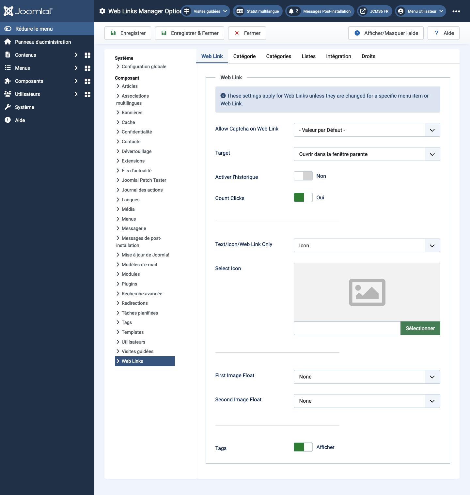

Joomla Help Screens
Options des liens web
Description
La configuration des options des liens web permet de définir des paramètres utilisés globalement pour tous les éléments de menu des liens web.
Éléments Communs
Certains éléments de cette page sont couverts dans des articles d'aide distincts :
Comment Accéder
- Sélectionnez Composants -> Liens Web -> Liens dans le menu de l'administrateur. Ensuite...
- Sélectionnez le bouton de la barre d'outils Options.
Capture d'écran

Onglet Lien Web
- Autoriser Captcha sur le lien Web Sélectionnez le plugin captcha qui sera utilisé dans le formulaire de soumission de lien web. Vous pouvez avoir besoin de saisir des informations requises pour votre plugin captcha dans le Gestionnaire de Plugins. Si 'Utiliser par défaut' est sélectionné, assurez-vous qu'un plugin captcha est sélectionné dans Configuration Globale.
- Cible La fenêtre du navigateur cible lorsque le lien est sélectionné.
- Compter les clics Si Oui, le nombre de fois où le lien a été cliqué sera enregistré.
- Texte/Icône/Lien Web seulement Affiche un texte, une icône ou rien avec le lien web. Le défaut est Icône.
- Sélectionner l'icône Cela vous permet de sélectionner un fichier image à utiliser comme icône par défaut pour les liens web. Lorsque vous cliquez sur le bouton Sélectionner, une fenêtre modale s'ouvre et vous permet de parcourir les fichiers image sur votre site.
- Image Flottante Où afficher l'image sur la page.
- Afficher les Étiquettes Afficher ou masquer les étiquettes du flux.
Onglet Catégorie
Les options de catégorie contrôlent la façon dont les liens web seront affichés lorsque vous descendez dans une catégorie pour voir ses liens.
- Choisir une mise en page Sélectionnez la mise en page par défaut à afficher lorsque vous cliquez sur un lien de catégorie. Si vous créez une mise en page alternative pour une catégorie, vous pouvez la sélectionner comme défaut.
- Titre de Catégorie Afficher ou masquer le titre de la catégorie.
- Description de Catégorie Afficher ou masquer la description de la catégorie.
- Image de Catégorie Afficher ou masquer l'image de la catégorie.
- Niveaux de Sous-catégories Combien de niveaux de sous-catégories afficher lorsqu'on affiche une vue de catégorie.
- Catégories Vides Afficher ou masquer les catégories qui ne contiennent aucun élément ou sous-catégorie.
- Descriptions des Sous-catégories Afficher ou masquer les descriptions des sous-catégories affichées.
- # Liens Web Afficher ou masquer le nombre de liens web dans chaque catégorie.
- Afficher les Étiquettes Afficher ou masquer les étiquettes pour une catégorie unique.
Onglet Catégories
Ces paramètres s'appliquent aux options de catégories de liens Web sauf s'ils sont changés pour un élément de menu spécifique.
- Description de la Catégorie de Premier Niveau Afficher ou masquer la description de la catégorie de premier niveau.
- Niveaux de Sous-catégories Combien de niveaux hiérarchiques afficher.
- Catégories Vides Afficher ou masquer les catégories qui ne contiennent pas d'éléments et pas de sous-catégories.
- Descriptions des Sous-catégories Afficher ou masquer la description de chaque sous-catégorie.
- # Liens Web Afficher ou masquer le nombre de liens web dans chaque catégorie.
Onglet Dispositions de Liste
Ces paramètres s'appliquent aux options de liste de liens Web sauf s'ils sont changés pour un élément de menu spécifique.
- Champ de Filtre Le champ de filtre crée un champ texte où un utilisateur peut entrer une valeur utilisée pour filtrer les liens web affichés dans la liste.
- Cacher: Ne pas afficher de champ de filtre.
- Titre: Filtrer sur le titre du lien web.
- Auteur: Filtrer sur le nom de l'auteur.
- Hits: Filtrer sur le nombre de hits de liens web.
- Afficher Sélection Afficher ou masquer le contrôle d'affichage # qui permet à l'utilisateur de sélectionner le nombre d'éléments à afficher dans la liste.
- En-têtes de Table Afficher ou masquer un en-tête au-dessus du tableau de liens web.
- Description des Liens Afficher ou masquer la description du lien web.
- Hits Afficher ou masquer le nombre de fois où ce lien web a été consulté.
Onglet Intégration
Ces paramètres déterminent comment le composant de liens web s'intégrera avec d'autres extensions.
- Lien RSS Afficher ou masquer les URL des liens de flux. Un lien de flux apparaîtra comme une icône de flux dans la barre d'adresse de la plupart des navigateurs.
- Supprimer les ID des URL Oui ou Non.
- Modifier les Champs Personnalisés Oui ou Non.
Conseils
- Si vous êtes un utilisateur débutant, vous pouvez simplement conserver les valeurs par défaut ici jusqu'à ce que vous en appreniez davantage sur l'utilisation des options globales.
- Si vous êtes un utilisateur avancé, vous pouvez gagner du temps en créant de bonnes valeurs par défaut ici. Lorsque vous configurez des éléments de menu et créez des liens web, vous pourrez accepter les valeurs par défaut pour la plupart des options.
- Toutes les valeurs définies ici peuvent être remplacées au niveau de l’élément de menu, de la catégorie ou du lien web.
Traduit par openai.com